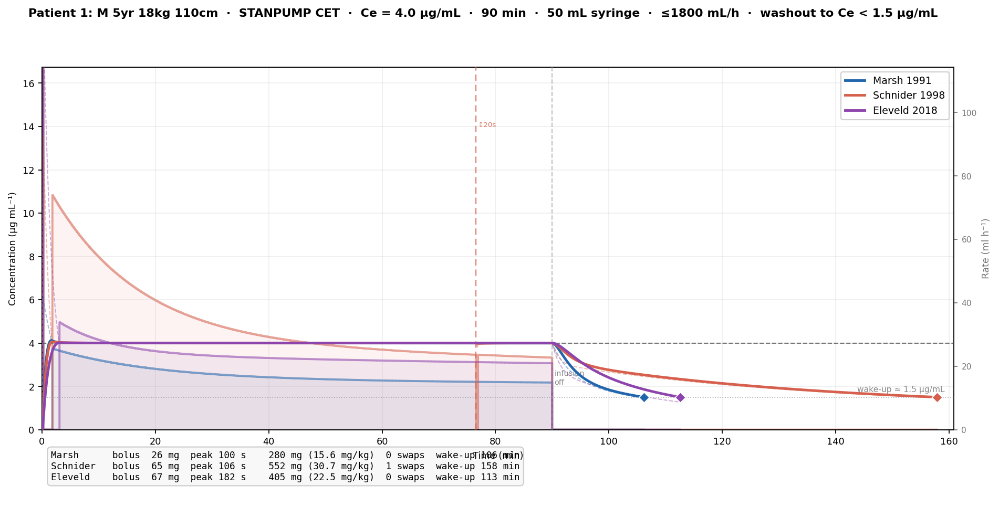
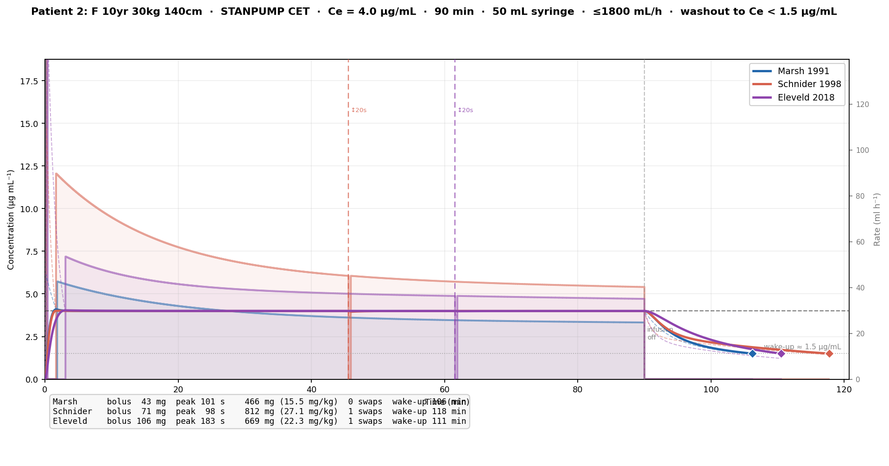
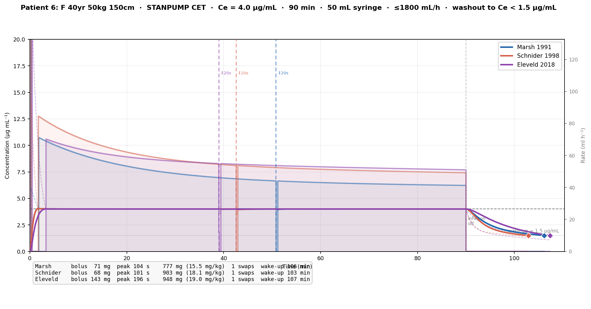

Propofol TCI — Effect-Site Targeting across 7 Patients and 4 PK/PD Models
Propofol is the primary intravenous anaesthetic used for total intravenous anaesthesia (TIVA). Its effect — loss of consciousness and anaesthetic depth — is mediated at the brain, not in the blood. Because propofol distributes from blood into the brain (the effect site) with a finite rate constant (ke0), plasma concentration (Cp) and effect-site concentration (Ce) are not equal during dynamic dosing. Targeting Cp directly overshoots during induction and undershoots during wake-up. Effect-site targeting (CET) accounts for this lag.
Three-compartment model — propofol pharmacokinetics are described by:
| Compartment | Physiology | Linked by |
|---|---|---|
| 1 (central) | Blood / highly perfused organs | k12, k21, k13, k31 |
| 2 (fast peripheral) | Muscle | k12, k21 |
| 3 (slow peripheral) | Fat | k13, k31 |
| Effect site | Brain | ke0 (= k41) |
Drug is eliminated from compartment 1 at rate k10. Amounts in each compartment follow a system of linear ODEs whose solution is a sum of exponentials — the mathematical structure STANPUMP exploits.
STANPUMP (Shafer & Gregg 1992) is the reference implementation for computer-controlled infusion
in anaesthesia. It operates in discrete 1-second steps — confirmed from SimTIVA source
(refresh_interval = 1000 ms, delta_seconds = 1) — and uses closed-form exponential
recursion rather than numerical ODE integration, giving exact results at machine speed.
cube()For a 3-compartment model the characteristic polynomial is:
X³ + a₂X² + a₁X + a₀ = 0 a₀ = k10·k21·k31 a₁ = k10·k31 + k21·k31 + k21·k13 + k10·k21 + k31·k12 a₂ = k10 + k12 + k13 + k21 + k31
The polynomial is transformed to depressed form y³ + p·y + q = 0 and solved analytically
via the trigonometric (Cardano) method. All three roots are real and negative for a physically valid model.
The roots λ₁ ≤ λ₂ ≤ λ₃ are the exponential decay rates. A fourth root λ₄ = ke0 describes effect-site equilibration.
calculate_udfs()Plasma coefficients (p_coef) link infusion rate to Cp:
p_coef[i] = (k21 − λᵢ)(k31 − λᵢ) / [(λᵢ − λⱼ)(λᵢ − λₖ) · Vc · λᵢ]
Effect-site coefficients (e_coef):
e_coef[i] = p_coef[i] · ke0 / (ke0 − λᵢ) i = 1,2,3 e_coef[4] = (ke0 − k21)(ke0 − k31) / [(λ₁ − ke0)(λ₂ − ke0)(λ₃ − ke0) · Vc]
Unit Disposition Functions (UDF) capture the response to a unit infusion (1 mg/s):
p_udf[t] = Cp from 1 mg/s continuous infusion running for t seconds (tabulated 0..300 s) e_udf[t] = Ce at time t following 1 mg/s infusion for 1 second then off
UDFs are computed by the exact 1-second recursion:
state[i](t+1) = state[i](t) · exp(−λᵢ) + coef[i] · rate · (1 − exp(−λᵢ))
peak_time is the index at which e_udf reaches its maximum — the moment Ce peaks after a unit bolus.
Starting from zero drug in the system, the initial bolus is determined by:
trial_rate = Ce_target / e_udf[peak_time]find_peak(): hill-climb to find the time that maximises
Ce_from_existing_state + e_udf[t] · trial_rate, then recompute trial_rate.
Repeat until convergence (|achieved − target| < 0.01 %).bolus_mg = ceil(trial_rate) — always overshoot slightly at peak to avoid under-dosing.peak_time seconds have elapsed.After the induction peak, STANPUMP switches to plasma-concentration targeting (CPT). Because at steady state Cp ≈ Ce, maintaining Cp at the target keeps Ce there too.
Each second (δ = 1 s):
predicted_Cp = Σᵢ ps[i] · exp(−λᵢ · δ) (Cp in 1 s if pump is off) rate = max(0, (Ce_target − predicted_Cp) / p_udf[δ])
All compartmental dynamics reduce to seven scalar recursions:
# Plasma (l[i] = exp(−λᵢ · 1s)) ps[i] = ps[i] * l[i] + p_coef[i] * rate * (1 − l[i]) i = 0,1,2 # Effect site (l[3] = exp(−ke0 · 1s)) es[j] = es[j] * l[j] + e_coef[j] * rate * (1 − l[j]) j = 0,1,2,3
Cp = Σ ps[i], Ce = Σ es[j].
| Model | Reference | Validated age range | Key characteristic |
|---|---|---|---|
| Marsh | BJA 1991;67:41–8 | Adults | Weight-only scaling; Vc = 0.228·BW; all k fixed |
| Schnider | Anesthesiology 1998;88:1170–82 | Adults | Fixed Vc = 4.27 L; CL1 adjusted for LBM, age, height |
| Paedfusor | BJA 2003;91:507–13 | 1–16 yr → Adults | Age-banded k10 and Vc; ke0 from Tpeak formula (BJA 2008) |
| Eleveld | BJA 2018;120:942–59 | Neonates → Elderly | Allometric + maturation functions; universal model |
All models return rate constants in min⁻¹ and volumes in litres; STANPUMP converts to per-second internally.
| Parameter | Value |
|---|---|
| Ce target | 4 μg/mL |
| Procedure duration | 90 min (5 400 s) |
| Syringe content | 50 mL × 10 mg/mL (1% propofol) = 500 mg |
| Syringe change — 1st | 20 s |
| Syringe change — 2nd | 180 s (prolonged — stress-test scenario) |
| Syringe change — 3rd+ | 20 s |
| STANPUMP time step | 1 s (confirmed from SimTIVA source) |
| CPT rate update | every 1 s |
The 180-second second change is the scenario's stress test: a 3-minute interruption mid-procedure forces Ce to drift below target before the pump recovers.
| # | Sex | Age | Weight | Height | BMI |
|---|---|---|---|---|---|
| 1 | Male | 5 yr | 18 kg | 110 cm | 14.9 |
| 2 | Female | 10 yr | 30 kg | 140 cm | 15.3 |
| 3 | Male | 20 yr | 80 kg | 180 cm | 24.7 |
| 4 | Female | 20 yr | 50 kg | 150 cm | 22.2 |
| 5 | Male | 40 yr | 80 kg | 180 cm | 24.7 |
| 6 | Female | 40 yr | 50 kg | 150 cm | 22.2 |
| 7 | Male | 40 yr | 120 kg | 180 cm | 37.0 |
Patients 1–2 are paediatric; patients 3–7 are adults spanning sex, BMI, and the 40-year working age group. Patient 7 is obese (BMI 37 kg/m²).
Figure 1. Summary across all 7 patients and 4 models. Top: number of syringe changes. Middle: total propofol dose (mg). Bottom: dose per kg body weight (mg/kg).
Three stacked panels for all 7 patients × 4 models.
Panel 1 — Syringe changes. Small children (patients 1–2) typically complete the procedure on one syringe. Large adults (80–120 kg) require 2–3 changes. Schnider consistently requires one fewer change for large patients because its fixed small Vc leads to lower maintenance rates once equilibrium is reached.
Panel 2 — Total dose (mg). Absolute dose scales with body weight. Marsh and Paedfusor (for adults) are nearly identical and purely weight-proportional. Schnider shows less weight-proportionality (fixed Vc, LBM-adjusted clearance). Eleveld gives the largest boluses (longest peak_time) but comparable total dose for most adults.
Panel 3 — Dose per kg (mg/kg). Normalised dose reveals model philosophy most clearly: Marsh is flat ~15.5 mg/kg for all adults. Schnider drops sharply for the obese patient 7 (11.6 mg/kg) — effectively dose-capping in obesity. Paedfusor gives children more per kg (15.5–22 mg/kg), which is physiologically correct. Eleveld (15–22 mg/kg) applies sex and age corrections; females receive slightly more per kg due to larger CL1.
Each figure shows a 2×2 grid (one panel per model). Within each panel:
| Element | Description |
|---|---|
| Blue solid line | Effect-site concentration Ce (μg/mL), left axis |
| Orange dashed line | Plasma concentration Cp (μg/mL), left axis |
| Black dashed horizontal | Target Ce = 4 μg/mL |
| Gray filled area | Infusion rate (ml/h), right axis — scaled to maintenance rates; bolus spike may clip |
| Orange bands | Syringe-change pauses, labelled with duration in seconds |
| Annotation box | Initial bolus (mg), peak time (s), total dose, number of changes |
All four panels share the same concentration y-axis, scaled to 120% of the 99.5th-percentile Cp across all models — zooming in on maintenance while avoiding compression by the brief induction Cp spike.

Figure 2. Patient 1 (M 5yr 18kg 110cm) — all four models.
Clearest model divergence in the dataset. Marsh delivers only a 26-mg bolus (flat weight scaling) with adult rate constants — Ce reaches target, but the underlying model is biologically inappropriate for a 5-year-old. Paedfusor and Eleveld use a longer peak_time (~168–175 s) and larger bolus (60–67 mg), correctly reflecting the child's slower ke0 and higher volume of distribution per kilogram. Schnider produces the highest mg/kg dose (30.7 mg/kg) because its adult-fixed Vc of 4.27 L is disproportionately small for this child.

Figure 3. Patient 2 (F 10yr 30kg 140cm) — all four models.
Paedfusor produces the longest induction pause (210 s) — its age-dependent ke0 formula gives the slowest equilibration at 10 yr, consistent with published Tpeak data. Eleveld peak_time (172 s) is shorter but still clearly paediatric. Marsh significantly under-doses per kg (15.6 mg/kg vs expected ~20 mg/kg for this age).

Figure 4. Patient 3 (M 20yr 80kg 180cm) — all four models.
Adult models begin to agree more closely. Schnider's fixed Vc creates a higher initial Cp spike that decays quickly. Eleveld requires the largest bolus (222 mg) due to its longer peak_time (164 s). Two syringe changes required by all models; the 180-second second change produces a visible Ce dip below target.

Figure 5. Patient 4 (F 20yr 50kg 150cm) — all four models.
Sex effect visible in Eleveld: female CL1 is 2.1 L/min vs 1.79 L/min for males, giving a larger bolus (154 mg) and higher total dose (19.4 mg/kg) than the equivalent male. Schnider also gives higher doses for females through LBM correction. One syringe change for all models.

Figure 6. Patient 5 (M 40yr 80kg 180cm) — all four models.
Closely matches patient 3 (same weight/height, 20 years older). The 180-second change is the second change here, producing the deepest Ce dip across all models. Slight age-dependent clearance decline visible in Eleveld.

Figure 7. Patient 6 (F 40yr 50kg 150cm) — all four models.
Female patients consistently require higher mg/kg doses under Eleveld and Schnider compared to weight-matched males. Marsh and Paedfusor (adult parameters) are sex-blind and give 15.7 mg/kg regardless. The prolonged 180-second change produces a clear Ce drop and recovery ramp visible in the blue Ce line.

Figure 8. Patient 7 (M 40yr 120kg 180cm) — all four models.
Greatest divergence among adult patients.
refresh_interval = 1000 ms, delta_seconds = 1). Both the UDF tables and the CPT rate update operate at this cadence.| File | Purpose |
|---|---|
stanpump_tci.py | Core STANPUMP engine: cube(), calculate_udfs(), virtual_model_cp/ce(), find_peak_time(), simulate_stanpump_cet() |
stanpump_scenario.py | Protocol constants, model instantiation, run_all() |
stanpump_plots.py | All figures: summary (3-panel bar) + per-patient (2×2 grid) |
models/marsh.py | Marsh model (BJA 1991) |
models/schnider.py | Schnider model (Anesthesiology 1998) |
models/paedfusor.py | Paedfusor model (BJA 2003) |
models/eleveld.py | Eleveld model (BJA 2018) |
Reproduce all results:
cd PKPD_Reimplementation python3 stanpump_plots.py # simulates all patients × models and saves all figures